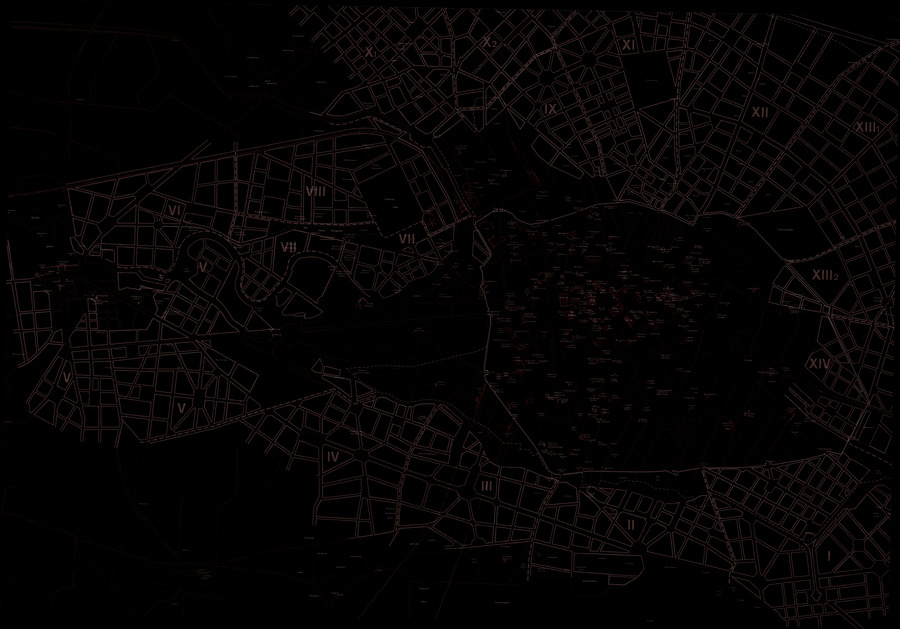

As a creative practice, mapping precipitates its most productive effects through a finding that is also a founding; its agency lies in neither reproduction nor imposition but rather in uncovering realities previously unseen or unimagined, even across seemingly exhausted grounds. Thus, mapping unfolds potential; it re-makes territory over and over again, each time with new and diverse consequences.
James Corner — “The Agency of Mapping”
Street Life · Gentrification
The urban landscape of Berlin presents a compelling arena for investigating the dynamics of gentrification and how the design of the streetscape may play a role. The topic of gentrification has remained in the forefront of public discussions about the German capital for at least three decades, during which its physical transformation has accelerated as a result of reunification. This research studio asks students to develop a project that addresses how the streetscape may contribute to the life of the city. Each student produces a unique body of research that uses the lens of gentrification — interpreted broadly — as a way to guide the speculation of material assemblies, programs, and planning of public streets. The work begins within specific corridors of Berlin, used to study the spatial, political, and cultural spaces of the street, then moves from collaborative corridor analysis into design research through individual projects.“For what is often dismissed as gentrification is sometimes better understood through other lenses — and perhaps evaluated in neutral or even positive terms rather than as categorically negative.”

About the studio
Street Life is one iteration of the ALAR 8010 Berlin Research Studio, a research studio on street life in Berlin taught in Fall 2021. The studio asked students to develop projects addressing how the streetscape may contribute to the life of the city, using the lens of gentrification — interpreted broadly — to guide speculation on material assemblies, programs, and the planning of public streets.
Faculty: Bradley Cantrell, Chair and Professor of Landscape Architecture, and Michael Lee, Reuben M. Rainey Professor of Landscape History. Meeting: Tuesday and Thursday, 12:30–17:00.
A companion seminar explored Berlin's rich cultural history through lectures, case studies, and media analysis; the studio fulfilled the requirements for the urban design certificate. This page documents the Street Life iteration of the Berlin Research Studio.